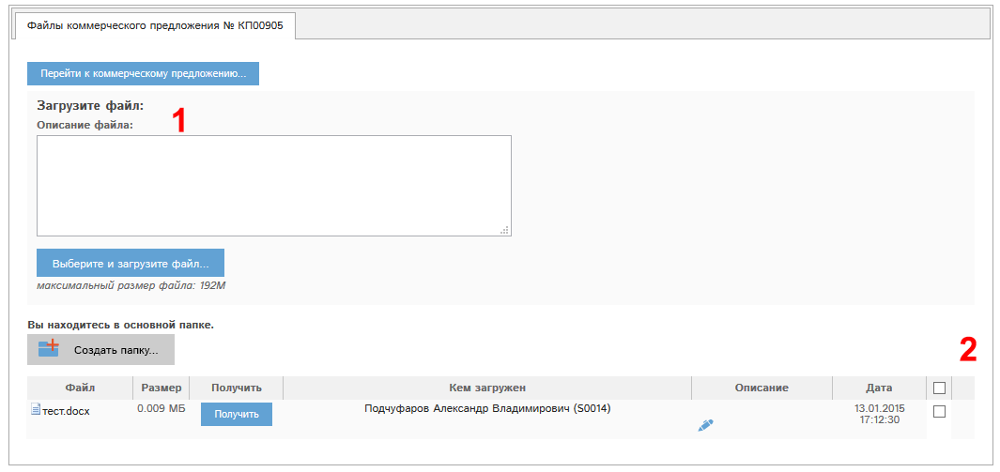

Рис. 6.9 Окно редактирования КП.
Рассмотрим блоки окна редактирования КП.
Блок «статус» (1) – на Рис. 6.9 имеет значение «утверждена». У каждого КП в данном блоке указан его статус.
Статус КП меняется следующим образом:
- КП создали, но оно не утвердилось автоматически – статус «Не утверждено».
- КП утвердили – статус «Утверждено».
- Сняли утверждение КП – статус «Не утверждено».
- Прошел срок действия КП - статус "Не актуально".
- Аннулировали КП (только из статуса «не утверждено») – статус «Аннулировано».
Кнопка (2) "Рентабельность коммерческого предложения" - может быть доступна в зависимости от Ваших прав. Она показывает рентабельность этого КП.
Кнопка (3) – «отправить коммерческое предложение на email...» позволяет отправить pdf-форму КП на указанный(е) адрес(а) электронной почты.
Если кнопка имеет вид - неактивна, то счет создать невозможно по одной из причин:
- КП не утверждено
- У Вас нет прав на отправку КП.
Кнопка  (4) – «Печать КП» - позволяет сформировать pdf-версию КП с возможностью ее распечатки.
(4) – «Печать КП» - позволяет сформировать pdf-версию КП с возможностью ее распечатки.
Кнопка (5) - "Копирование КП" позволяет создать копию этого КП со всеми выбранными позициями и скидкой. Это удобно для создания точной копии КП для другого контрагента.
Блок «Примечания» (6) позволяет добавлять примечания по КП. Количество примечаний не ограничено. Для добавления примечаний нажмите кнопку «Добавить примечания…». Откроется окно создания/редактирования примечаний:
Рис. 6.10 Окно создания/редактирования примечаний.
Впишите текст примечания и нажмите кнопку «Добавить».
Примечания можно редактировать при помощи кнопки справа от редактируемых примечаний.
Откроется окно, аналогичное Рис. 6.10.
При наличии прав возможно удаление примечаний.
Для удаления примечаний нажмите кнопку справа от этого примечания.
Блок утверждения КП (7) на Рис. 6.9 позволяет утвердить или снять утверждение КП.
Редактирование КП в статусе «Утверждено», "Не актуально" невозможно!
Для редактирования КП необходимо снять утверждение!
Кнопка «Файлы» на Рис. 6.9 открывает файловый реестр, содержащий файлы, прикрепленные к КП:

Рис. 6.11 Фрагмент окна реестра файлов КП.
Раздел представляет собой реестр доступных для скачивания файлов (2). В реестре указаны:
- имена файлов,
- размер в мегабайтах,
- кто из сотрудников загрузил файл,
- описание каждого файла,
- даты загрузки.
Чтобы скачать файл, необходимо либо кликнуть по имени файла, либо нажать кнопку Получить.
В зависимости от Ваших прав, у Вас могут быть показаны блоки и кнопки:
(1) Загрузить файл. С помощью этого блока Вы можете загрузить файл в реестр. Необходимо описать файл в поле «Описание файла», и затем нажать кнопку «Выберите и загрузите файл…». Откроется окно выбора файла. После выбора файл будет загружен в раздел.
В блоке (2) – кнопки:
 - редактировать описание файла;
- редактировать описание файла;
 - удалить файл.
- удалить файл.